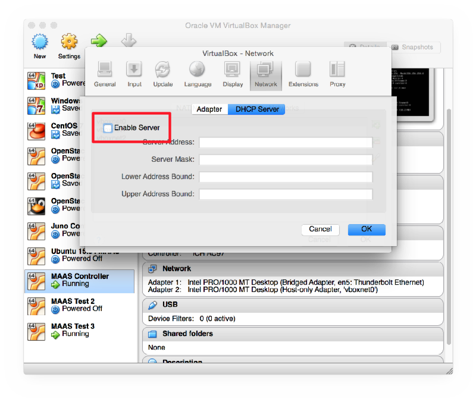
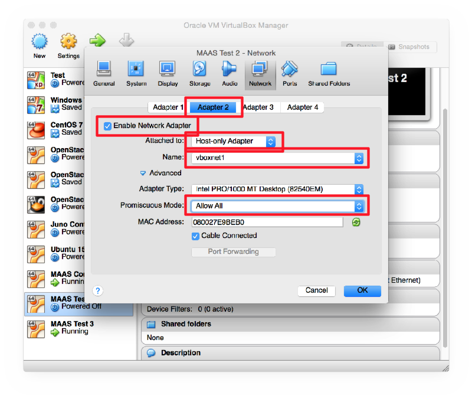

Ganeti is a virtual machine cluster management tool developed by Google. The solution stack uses either Xen or KVM as the virtualization platform, LVM for disk management, and optionally DRBD for disk replication across physical hosts.
We will install Ganeti in a virtual machine, configure it to use the Xen hypervisor, and use it to create and manage some virtual machines.
Normally you would install this on your physical hosts. We are using it in a VirtualBox virtual machine which is pretending to be our physical host, because we don’t have enough physical boxes for everyone. This forces us to use Xen (which is slower than KVM) because we can’t use KVM inside a VirtualBox virtual machine. You could use either for a real deployment. The installation process is slightly different. KVM is not covered here.
Install VirtualBox or make sure you are running version 4.3 or higher.
Open VirtualBox Preferences > Network > Host-Only Adaptors. Ensure that you have at least two listed: vboxnet0 and vboxnet1. If not, click on the Add button to the right of the list to create them.
Double-click on vboxnet0 and check that the IP addresses are as follows:
And check that the DHCP server is enabled and configured for:

If you have made any changes, then exit and restart VirtualBox, otherwise this change will not take effect, as we discovered after an hour of debugging!
Create a new VM called Ganeti Demo. Give it 2 GB RAM and a 40 GB VDI disk, dynamically sized.
Start the VM and attach the Ubuntu 14.04 Server 64-bit CD. Read the following sections before you start the installation, and use them at the appropriate times during the installation.
You must use a fully qualified hostname, for example ganeti.pcXX.sse.ws.afnog.org.
The server should use LVM for disk space, so instead of the default Guided Partitioning, choose Manual, then SCSI3, then:
xenvg.When asked for a proxy server, enter this one (to save a LONG install time):
Please enter this carefully and check it. Using the wrong value will make it impossible for you to install any packages. Of course, if you are not at the AfNOG workshop then this server will no longer exist, so use a local proxy server or leave it blank.
After installation, shut down the machine and reconfigure its network interfaces in VirtualBox

Then start the machine again. Log in on the console and edit /etc/network/interfaces to look like this:
# The loopback network interface
auto lo
iface lo inet loopback
# The primary network interface
auto eth0
iface eth0 inet dhcp
auto eth1
iface eth1 inet manual
auto xen-br0
iface xen-br0 inet static
address 192.168.56.10
netmask 255.255.255.0
bridge_ports eth1
bridge_stp off
bridge_fd 0
Edit /etc/hostname and put the fully-qualified hostname (FQDN) in there.
Edit /etc/hosts and ensure that it contains the IP address and hostname of
your host. You will also need to choose a name (hostname) and IP address for
your cluster, which must be different. For example:
127.0.0.1 localhost
192.168.56.10 ganeti1.sse.ws.afnog.org
192.168.56.11 cluster1.sse.ws.afnog.org
Normally you would add DNS entries for all of these. Feel free to use the DNS
for the cluster name, instead of editing /etc/hosts. Your hostname should
really be in the DNS as well, but for the purposes of this exercise
(non-production deployment) it doesn’t matter too much.
Then reboot the host, log in again and run the following commands:
sudo apt-get dist-upgrade
sudo apt-get install ganeti2 ganeti-htools ganeti-instance-debootstrap
Start following the Ganeti installation tutorial¶, skipping the following sections:
Run the following command, substituting the cluster name you added to
/etc/hosts instead of cluster1...:
sudo gnt-cluster init --vg-name Main --enabled-hypervisors=xen-pvm cluster1.sse.ws.afnog.org
Note: Normally you would use either xen-hvm or kvm as the hypervisor,
instead of xen-pvm above. In this case we must use xen-pvm because we are
doing this inside a virtual machine, so we can’t use the virtualisation CPU
instructions because VirtualBox is already using them to run the Ganeti host
node (VirtualBox guest).
Create the file /etc/ganeti/vnc-cluster-password containing the password that
you want to use for VNC access to consoles.
Check that the gnt-node list command shows your node:
$ sudo gnt-node list
Node DTotal DFree MTotal MNode MFree Pinst Sinst
ganeti1.sse.ws.afnog.org ? ? ? ? ? 0 0
Continue following the installation instructions from Testing the setup